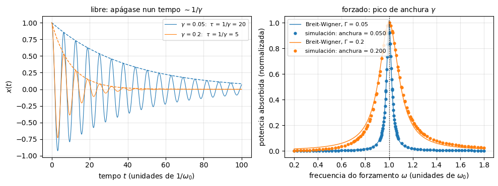
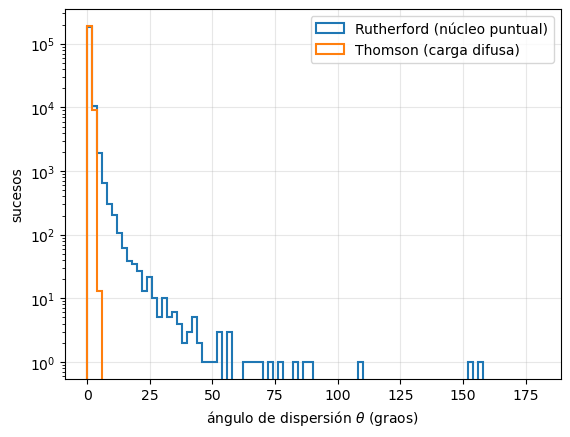

Extensión: Introdución#
Jose A. Hernando
Departamento de Física de Partículas. Universidade de Santiago de Compostela
Setembro 2026
# Configuración: o código auxiliar está no paquete notebooks/fnyp/
try:
import fnyp
except ModuleNotFoundError: # en Google Colab hai que traer antes o repositorio
!git clone -q https://github.com/xabiercidvidal/USC-FNeP.git
import sys; sys.path.append('USC-FNeP/notebooks')
from fnyp.inicio import *
Last version Wed Oct 7 08:58:03 2026
1. Anchura#
Complementa a sección Por que anchura? do tema de Introdución: a curva de Breit-Wigner e a súa relación coa vida media, \(\Gamma \, \tau = \hbar\).
1.1. O oscilador#
A Breit-Wigner non é exclusiva da cuántica: é a curva de resonancia de calquera oscilador con rozamento, \(\ddot{x} + \gamma \dot{x} + \omega_0^2 x = F(t)\). Ten dúas caras:
Libre. Se se solta, oscila a \(\omega_0\) e apágase: a amplitude cae como \(e^{-\gamma t/2}\) e a enerxía como \(e^{-\gamma t}\). A enerxía vive un tempo \(\tau = 1/\gamma\), como a supervivencia \(e^{-t/\tau}\) dunha partícula.
Forzado. Se se empurra a unha frecuencia \(\omega\), absorbe enerxía sobre todo preto de \(\omega_0\). Preto do pico, a potencia absorbida é unha Breit-Wigner de anchura \(\gamma\):
O mesmo \(\gamma\) fixa o que dura a oscilación libre e o ancho que é o pico: anchura × duración = 1. Con pouco rozamento, o oscilador lembra o empurrón moito tempo e só acumula enerxía se cada empurrón chega en fase co anterior: hai que acertar moito coa frecuencia. Con moito rozamento esquece axiña, e dálle case igual.
oscilador |
partícula |
|---|---|
frecuencia propia \(\omega_0\) |
masa \(M\) |
rozamento \(\gamma\) |
\(\Gamma/\hbar = 1/\tau\) |
frecuencia do empurrón \(\omega\) |
enerxía da colisión \(\sqrt{s}\) |
potencia absorbida \(P(\omega)\) |
sección eficaz \(\sigma(\sqrt{s})\) |
Con \(E = \hbar \omega\), anchura × duración = 1 é \(\Gamma \, \tau = \hbar\).
sim.resonancia(gammas=(0.05, 0.2));
# Na clase: descomenta a liña seguinte para ver o varrido en frecuencia animado.
# Ollo: non gardes o notebook coa súa saída (~1.3 MB).
# sim.resonancia_animada(gamma=0.1)
gamma = 0.050: tau = 1/gamma = 20.0 anchura medida = 0.0501 anchura x tau = 1.003
gamma = 0.200: tau = 1/gamma = 5.0 anchura medida = 0.2003 anchura x tau = 1.001

[>] Tarefa — Anchura e duración
A simulación integra a ecuación do oscilador. Á esquerda, o oscilador libre; á dereita, un varrido en frecuencia: para cada \(\omega\) agarda a que se apague o transitorio e mide a potencia que absorbe, como OPAL varría \(\sqrt{s}\). A anchura do pico mídese na simulación, non se toma da fórmula.
Executa a cela. Canto vale anchura × \(\tau\) para cada \(\gamma\)?
Proba outros rozamentos, por exemplo
gammas=(0.02, 0.1, 0.4). Que cambia e que se mantén?Con \(\gamma = 0.4\) os puntos sepáranse da Breit-Wigner lonxe do pico. Por que? Deixa de valer anchura × duración = 1?
Solución
\(1.00\) nos dous casos, dentro da precisión da simulación.
Canto máis rozamento, antes se apaga o oscilador libre e máis ancho é o pico, pero o produto segue a ser \(1\): \(0.02 \times 50\), \(0.1 \times 10\) e \(0.4 \times 2.5\). É a mesma relación que \(\Gamma \, \tau = \hbar\): o \(Z\), con \(\Gamma_Z = 2.5\) GeV, vive \(2.6 \cdot 10^{-25}\) s, e o leptón \(\tau\), con \(2.9 \cdot 10^{-13}\) s, ten unha anchura de \(2.3 \cdot 10^{-3}\) eV.
A potencia exacta é \(P(\omega) \propto \gamma \omega^2 / [(\omega_0^2 - \omega^2)^2 + \gamma^2 \omega^2]\). A Breit-Wigner sae de aproximar \(\omega_0^2 - \omega^2 \simeq 2 \omega_0 (\omega_0 - \omega)\), que só vale preto do pico; cun pico ancho, os puntos afastados xa non están preto. A anchura, en cambio, segue a ser exactamente \(\gamma\). Para as partículas pasa o mesmo: a forma de arriba é a aproximación preto do pico, e para o \(Z\), con \(\Gamma_Z / m_Z \simeq 3\,\%\), úsase unha versión relativista en \(s\).
2. Sección eficaz de Rutherford#
Resolución completa da tarefa Deduce a sección eficaz de Rutherford do tema de Introdución, seguindo as súas pistas. O obxectivo é chegar a
sen resolver a órbita: coa conservación da enerxía e do momento angular, a simetría da traxectoria e algo de xeometría.
Hipóteses (límite de Rutherford):
o núcleo, de carga \(Ze\), é puntual e está fixo: non retrocede;
a partícula \(\alpha\), de carga \(ze\) e masa \(m\), chega con velocidade \(v_0\) e enerxía cinética \(E = \frac{1}{2} m v_0^2\);
só actúa a forza de Coulomb (ignóranse os electróns do átomo);
\(b\) é o parámetro de impacto e \(\theta\) o ángulo de dispersión.
A figura orixinal do artigo de Rutherford (1911) |

2.1. O cambio de momento#
A colisión é elástica e o núcleo non retrocede, así que a \(\alpha\) sae coa mesma enerxía coa que entra: \(|{\bf p}_i| = |{\bf p}_f| = p = m v_0\).
Os vectores \({\bf p}_i\), \({\bf p}_f\) e \(\Delta {\bf p} = {\bf p}_f - {\bf p}_i\) forman un triángulo isóscele, con ángulo \(\theta\) entre os dous lados iguais. A bisectriz dese ángulo pártea en dous triángulos rectángulos, e cada un ten un cateto \(|\Delta{\bf p}|/2\) oposto ao ángulo \(\theta/2\):
\(\Delta {\bf p}\) apunta ao longo da bisectriz da traxectoria: a recta que une o núcleo co punto de máxima aproximación.
2.2. O impulso: a simetría#
O cambio de momento é o impulso da forza, \(\Delta {\bf p} = \int {\bf F} \, \mathrm{d}t\).
Medimos o ángulo polar \(\varphi\) da \(\alpha\), vista desde o núcleo, a partir da bisectriz. A forza é central, de módulo
e descomponse nunha compoñente ao longo da bisectriz, \(F \cos\varphi\), e outra perpendicular, \(F \sin\varphi\).
A traxectoria é simétrica respecto da bisectriz: a cada punto da rama de entrada, con ángulo \(-\varphi\), correspóndelle un da de saída con \(+\varphi\), á mesma distancia \(r\). A compoñente perpendicular, \(F\sin\varphi\), cambia de signo entre os dous e a súa integral anúlase. Só queda a compoñente ao longo da bisectriz, que é a dirección de \(\Delta {\bf p}\):
2.3. O momento angular: o \(1/r^2\) desaparece#
A integral en \(t\) esixe coñecer \(r(t)\), é dicir, a órbita. Cambiamos a \(\varphi\).
A forza é central, así que o momento angular respecto do núcleo consérvase. Lonxe, a \(\alpha\) vai en liña recta con velocidade \(v_0\) a unha distancia \(b\) do núcleo, e en calquera punto da traxectoria:
Substituíndo na integral:
O \(r^2\) do cambio de variable cancela exactamente o \(1/r^2\) de Coulomb. A integral xa non depende da forma da órbita, só dos seus extremos. É o que fai elemental o problema, e só ocorre para unha forza que vai como \(1/r^2\).
2.4. Os límites: as asíntotas#
A \(\alpha\) vén do infinito e vaise ao infinito, ao longo das dúas asíntotas da traxectoria. Hai que saber que ángulo forman coa bisectriz.
As dúas asíntotas forman entre si o ángulo de dispersión \(\theta\): unha é a dirección de entrada, e a outra, a de saída. Vistas desde o núcleo, a \(\alpha\) entra por unha e sae pola outra percorrendo un ángulo total \(\pi - \theta\) (con \(\theta = 0\), sen desviación, percorre \(\pi\); con \(\theta = \pi\), rebote frontal, volve por onde veu). Por simetría, cada asíntota queda a \((\pi - \theta)/2\) da bisectriz:
e polo tanto
2.5. O parámetro de impacto \(b(\theta)\)#
Igualamos as dúas expresións de \(|\Delta {\bf p}|\), a xeométrica (apartado 2.1) e a dinámica (apartado 2.4):
Despexando \(b\) e usando \(m v_0^2 = 2E\):
\(d\) é a distancia de máxima aproximación nun choque frontal, no que toda a enerxía cinética se converte en enerxía potencial de Coulomb. Comprobacións:
\(\theta \to \pi\) (rebote frontal): \(b \to 0\), a \(\alpha\) vai directa ao núcleo.
\(\theta = 90°\): \(b = d/2\), o raio do disco da tarefa O proxectil de 15 polgadas.
\(\theta \to 0\): \(b \to \infty\), as \(\alpha\) afastadas apenas se desvían.
Canto máis preto pasa do núcleo, máis se desvía: cada \(b\) corresponde a un único \(\theta\).
2.6. De \(b(\theta)\) á sección eficaz#
Como cada \(b\) dá un único \(\theta\), as \(\alpha\) que chegan dentro dun anel de raio \(b\) e anchura \(\mathrm{d}b\) saen dentro dun cono de ángulo \(\theta\) e anchura \(\mathrm{d}\theta\). A área do anel é a sección eficaz de acabar nese cono, e o cono subtende un ángulo sólido \(\mathrm{d}\Omega\):
(o valor absoluto porque \(b\) decrece ao medrar \(\theta\)). Con \(b = \frac{d}{2}\cot\frac{\theta}{2}\):
e todo se simplifica:
que é a sección eficaz de Rutherford.
2.7. Observacións#
Non é só conservación. Fan falta as dúas leis de conservación (pasos 1 e 3), máis a simetría do apartado 2.2 e a xeometría do apartado 2.4. Pero en ningún momento se resolve a ecuación da órbita.
A sección eficaz integrada por riba dun ángulo \(\theta_0\) é o disco de raio \(b(\theta_0)\): \(\sigma(\theta > \theta_0) = \pi \, b(\theta_0)^2 = \pi \frac{d^2}{4} \cot^2\frac{\theta_0}{2}\). Para \(\theta_0 = 90°\) é \(\pi (d/2)^2\), a da tarefa.
Diverxe en \(\theta \to 0\), e a sección eficaz total é infinita: é o alcance infinito de Coulomb. Nun átomo os electróns apantallan o núcleo, e as \(\alpha\) que pasan lonxe non se desvían.
A fórmula non depende do signo das cargas: vai con \((zZ)^2\). Unha carga que atrae daría a mesma distribución angular.
A mecánica cuántica dá o mesmo resultado, un caso excepcional (e afortunado para Rutherford). Con espín e a velocidades relativistas aparece a corrección de Mott.
Deixa de valer cando a \(\alpha\) toca o núcleo: se \(d\) é menor que a suma dos raios nucleares, entra en xogo a forza forte. Para \(\alpha\) de 5 MeV en ouro, \(d \approx 45\) fm, fronte a uns 9 fm de raios: Rutherford non chegaba a ver o tamaño do núcleo. Con \(\alpha\) máis enerxéticas e núcleos máis lixeiros vense desviacións, e así se mediron os primeiros raios nucleares.
2.8. Thomson fronte a Rutherford#
Rutherford: «It was quite the most incredible event that has ever happened to me in my life. It was almost as incredible as if you fired a 15-inch shell at a piece of tissue paper and it came back and hit you.» Por que lle sorprendeu tanto? A tarefa compara, cunha simulación, os dous modelos de átomo da época, e estima coa sección eficaz que acabamos de deducir a fracción de \(\alpha\) retrodispersadas.
[>] Tarefa — O proxectil de 15 polgadas
Rutherford dixo que ver rebotar unha \(\alpha\) foi «case tan incrible como disparar un obús de 15 polgadas contra un papel de seda e que volvese e che batese». Imos ver por que lle sorprendeu tanto.
A simulación enfronta dous modelos do átomo con \(\alpha\) de 5 MeV sobre ouro:
Thomson: a carga positiva repartida por todo o átomo. Moitas desviacións minúsculas que se acumulan.
Rutherford: toda a carga concentrada nun núcleo puntual.
Que fracción de partículas se dispersa a máis de 90° en cada modelo?
Por que o modelo de Thomson dá exactamente cero e non simplemente «moi pouco»?
A lámina de Geiger e Marsden tiña \(\sim 4 \cdot 10^{-5}\) cm de ouro (\(\rho = 19.3\) g/cm³, \(A = 197\)). Estima con lapis e papel a fracción de \(\alpha\) que retrodispersan e compáraa co «1 de cada 8000» que mediron.
Pistas para a pregunta 3
A conta é unha sección eficaz na súa forma máis espida: cantos brancos ve o proxectil \(\times\) que área ofrece cada branco.
Cantos brancos. A densidade superficial de núcleos, \(n_A = \rho \, N_A \, t / A\), en núcleos/cm². Segue as unidades: \(\rho t\) é g/cm², dividir por \(A\) dá mol/cm², e multiplicar por \(N_A\) dá núcleos/cm².
A distancia de máxima aproximación \(d\), nun choque frontal, sae de conservar a enerxía: toda a enerxía cinética se converte en potencial de Coulomb,
con \(z = 2\) para a \(\alpha\) e \(Z = 79\) para o ouro.
A área da diana. O ángulo de dispersión decrece co parámetro de impacto segundo \(b = (d/2) \cot(\theta/2)\). Logo retrodispersar, \(\theta > 90°\), é exactamente acertar dentro dun disco de raio \(b_{90} = d/2\):
Ollo co factor 2: \(d\) é o choque frontal, \(d/2\) é o raio do disco!
A probabilidade é a fracción de lámina cuberta por eses discos, \(P = n_A \sigma\). Só vale se \(P \ll 1\): lámina delgada, discos que non se solapan, ningunha \(\alpha\) que rebote dúas veces.
Coidado coas unidades ao final: \(1\) \(\mathrm{fm}^2 = 10^{-26}\) \(\mathrm{cm}^2\).
Solución
Ningunha no modelo de Thomson; unha fracción pequena, pero non nula, no de Rutherford.
Porque é unha cuestión de cinemática, non de probabilidade. Unha \(\alpha\) de 5 MeV contra unha carga difusa non pode retroceder nin aínda que teña sorte: non hai nada suficientemente compacto e masivo contra o que rebotar. A distribución gaussiana da dispersión múltiple non chega a 90° nin con \(10^{1000}\) sucesos. Por iso o resultado de Geiger e Marsden matou o modelo, en lugar de só tensalo.
Núcleos por unidade de área: \(n_A = \rho N_A t / A = 19.3 \cdot 6.02\cdot10^{23} \cdot 4\cdot10^{-5} / 197 \approx 2.4 \cdot 10^{18}\) cm⁻². Con \(d = 2 \cdot 79 \cdot 1.44 / 5 \approx 45.5\) fm, \(\sigma = \pi (d/2)^2 \approx 1.6 \cdot 10^{-23}\) cm². Logo \(P = n_A \sigma \approx 4 \cdot 10^{-5}\), ou sexa 1 de cada 25 000. Mesma orde de magnitude que o observado: o modelo do núcleo puntual funciona.
(O
b_maxda simulación é un parámetro libre que fixa a normalización; o que a simulación demostra é o contraste entre modelos, non o número absoluto.)
sim.rutherford(n=200000, E_MeV=5., Z_blanco=79);
distancia de máxima aproximación d = 45.5 fm
fracción dispersada a theta > 90 graos:
Rutherford : 1.50e-05 -> 1 de cada 66667
Thomson : 0.00e+00 -> ningún suceso
